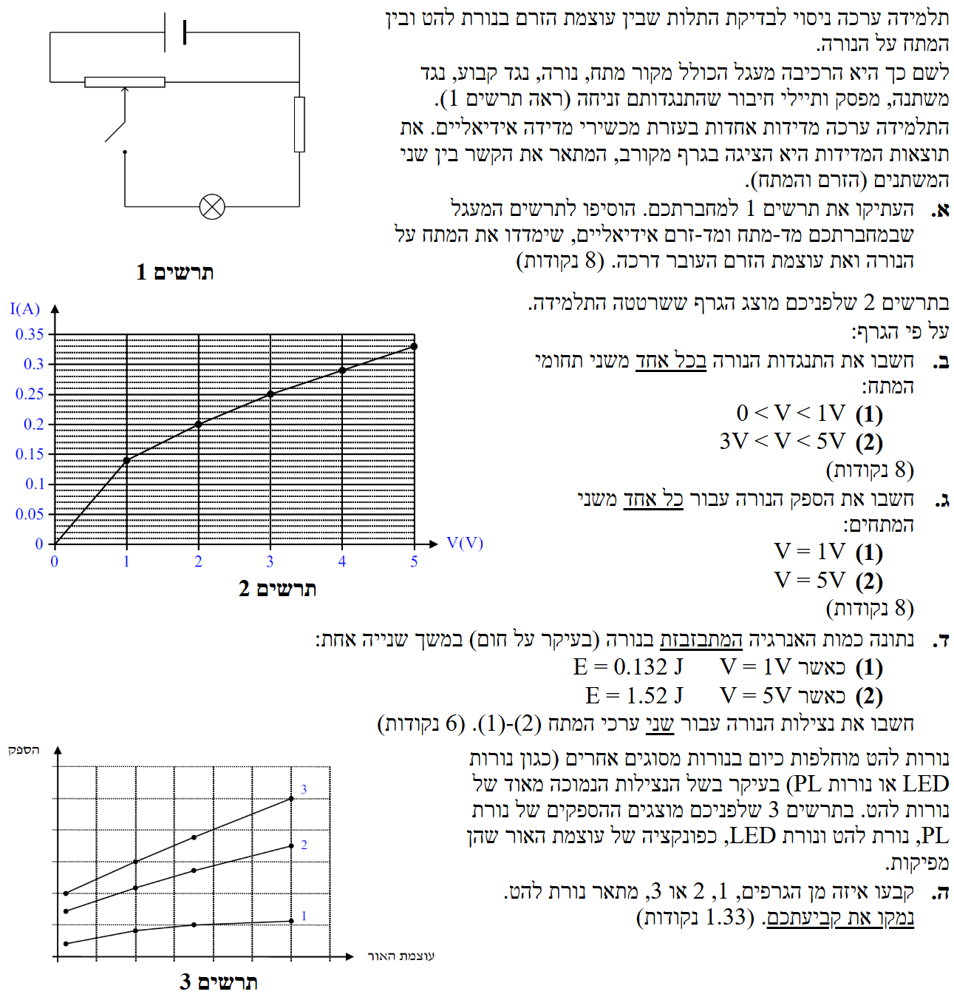

פתרון בגרות פיזיקה 2016
חשמל, שאלה 3
פתרון מודרך, צעד-אחר-צעד, כולל ניתוח מעגל חשמלי, התנגדות, הספק ונצילות של נורות.
עודכן:
--- --:--:--
מבט כללי על השאלה
שלום לתלמידים היקרים! בשאלה זו אנו מנתחים ניסוי לבדיקת התלות בין עוצמת הזרם למתח בנורת להט.
נשתמש בגרף שנתון לנו וננתח את התנהגות הנורה, ההתנגדות שלה, ההספק, וכן נשווה אותה לנורות מסוגים אחרים. בואו נתחיל!

[תמונת השאלה המקורית]
לא נמצאה תמונה בשם question-image.png באותה תיקייה.
מה נתון:
- מעגל חשמלי הכולל: מקור מתח, נורה, נגד קבוע, נגד משתנה ומפסק.
- התנגדות תיילי החיבור זניחה.
- מד מתח ומד זרם אידיאליים שאותם עלינו להוסיף למעגל.
מה מחפשים:
להעתיק את תרשים 1 למחברת ולהוסיף לו מד מתח (V) ומד זרם (A) אידיאליים שימדדו את המתח על הנורה ואת הזרם העובר דרכה.
נוסחאות ועקרונות בשימוש:
מד זרם (Ampermeter) נחבר בטור לרכיב שאנו רוצים למדוד את הזרם דרכו. מד זרם אידיאלי הוא בעל התנגדות אפס, ולכן אינו משפיע על הזרם במעגל בחיבור טורי.
מד מתח (Voltmeter) נחבר במקביל לרכיב שאנו רוצים למדוד את המתח עליו. מד מתח אידיאלי הוא בעל התנגדות אינסופית, ולכן זרם אינו עובר דרכו בחיבור מקבילי.
פתרון צעד-אחר-צעד:
אנו רוצים למדוד את הזרם דרך הנורה, לכן נמקם את מד הזרם בטור לנורה (על אותו "ענף"). אנו רוצים למדוד את המתח על הנורה, לכן נמקם את מד המתח במקביל לנורה. הנה השרטוט המעודכן:
ראה שרטוט מעלה. מד הזרם מחובר בטור לנורה, ומד המתח מחובר במקביל אליה.
טיפ מורה:
תמיד זכרו את הכלל: זרם מודדים בטור. מתח מודדים במקביל. חיבור שגוי של מד זרם במקביל עלול לגרום לקצר (כי התנגדותו שואפת לאפס), וחיבור שגוי של מד מתח בטור יקטע כמעט לחלוטין את הזרם במעגל (כי התנגדותו שואפת לאינסוף).
מה נתון:
- גרף 2 המציג את עצמת הזרם \( I \) דרך הנורה כפונקציה של המתח \( V \) עליה.
- תחום מתחים (1): \( 0 < V < 1\text{V} \)
- תחום מתחים (2): \( 3\text{V} < V < 5\text{V} \)
מה מחפשים:
לחשב את התנגדות הנורה, \( R \), בכל אחד משני תחומי המתח הנ"ל.
נוסחאות ועקרונות בשימוש:
התנגדות רכיב מוגדרת לפי חוק אוהם (אף אם הרכיב אינו אוהמי):
\( V = RI \)
ומכאן נבודד את ההתנגדות:
\( R = \frac{V}{I} \)
נשים לב שבגרף שלנו הציר האנכי הוא \( I \) והאופקי הוא \( V \). אנו ניקח נקודות מהגרף עבור כל תחום ונחשב.
חישוב:
תחום (1): \( 0 < V < 1\text{V} \)
נבחר נקודה בתוך התחום הזה. למשל, את קצה התחום \( V = 1\text{V} \). לפי הגרף, כאשר \( V = 1\text{V} \), הזרם הוא \( I = 0.14\text{A} \). (ניתן לראות שזה קו ישר העובר בראשית, ולכן ההתנגדות קבועה בתחום זה). נציב בנוסחה:
\[ R_1 = \frac{V_1}{I_1} = \frac{1}{0.14} \approx 7.143\Omega \]
תחום (2): \( 3\text{V} < V < 5\text{V} \)
אם נתבונן בגרף בתחום שבין 3V ל- 5V, נראה כי העקומה מתנהגת בקירוב טוב כקו ישר, אך הוא אינו עובר דרך הראשית. לכן, ההתנגדות עצמה (המוגדרת כ- \( R = \frac{V}{I} \)) אינה קבועה, אלא משתנה לאורך התחום.
נחשב את ההתנגדות בקצות התחום:
- עבור \( V = 3\text{V} \), הזרם הוא \( I = 0.25\text{A} \), לכן: \( R_3 = \frac{3}{0.25} = 12.0\Omega \)
- עבור \( V = 5\text{V} \), הזרם הוא \( I = 0.33\text{A} \), לכן: \( R_5 = \frac{5}{0.33} \approx 15.2\Omega \)
העובדה שהגרף הוא בקירוב קו ישר בתחום זה מעידה על כך שההתנגדות הדינמית (המוגדרת כשיפוע הגרף: \( \frac{\Delta V}{\Delta I} \)) היא קבועה בקירוב, אך ההתנגדות הסטטית (זו ששואלים עליה בדרך כלל) משתנה.
(1) בתחום \( 0 < V < 1\text{V} \), ההתנגדות קבועה וערכה הוא בקירוב \( 7.14\Omega \).
(2) בתחום \( 3\text{V} < V < 5\text{V} \), ההתנגדות אינה קבועה אלא עולה מכ- \( 12.0\Omega \) לכ- \( 15.2\Omega \).
רגע של לימוד (טיפ מורה):
מה המשמעות של הקו הישר בקירוב בתחום (2)? הוא מעיד על כך שההתנגדות הדינמית של הנורה קבועה בתחום זה.
אם נחשב אותה בעזרת ההופכי של השיפוע נקבל: \( R_{dyn} = \frac{\Delta V}{\Delta I} = \frac{5 - 3}{0.33 - 0.25} = 25.0\Omega \).
ההתנגדות הדינמית אומרת לנו בעצם כמה תוספת מתח אנו צריכים כדי להעלות את הזרם באמפר אחד.
אבל! וזה אבל גדול: זוהי לא ההתנגדות של המוליך באותו תחום! התנגדות המוליך האמיתית (הסטטית, המחושבת לפי \( R=\frac{V}{I} \) בכל רגע נתון) עולה בתחום זה מ-\( 12\Omega \) ל-\( 15\Omega \) בקירוב (כתוצאה מהתחממות חוט הלהט). חשוב מאוד להבדיל בין התנגדות שמוגדרת כ- \( V/I \) (שערכה משתנה בכל נקודה על הגרף כי היחס בין \( V \) ל-\( I \) משתנה) לבין התנגדות דינמית שמוגדרת כ- \( \Delta V/\Delta I \) (שערכה קבוע בתחום כי השיפוע קבוע). בשאלות מסוג זה בבגרות, כדאי לציין בפירוש שההתנגדות משתנה ולהראות את ערכי הקצה.
מה נתון:
- (1) \( V_1 = 1\text{V} \) ומהגרף מצאנו \( I_1 = 0.14\text{A} \)
- (2) \( V_2 = 5\text{V} \) ומהגרף מצאנו \( I_2 = 0.33\text{A} \)
מה מחפשים:
לחשב את הספק הנורה, \( P \), עבור כל אחד משני המתחים.
נוסחאות ועקרונות בשימוש:
הספק חשמלי של רכיב מחושב לפי הנוסחה:
\( P = V_{AB}I \)
כאשר \( V \) הוא המתח על הרכיב ו- \( I \) הוא הזרם דרכו.
חישוב:
(1) עבור \( V = 1\text{V} \):
\[ P_1 = V_1 \cdot I_1 = 1 \cdot 0.14 = 0.140\text{W} \]
(2) עבור \( V = 5\text{V} \):
\[ P_2 = V_2 \cdot I_2 = 5 \cdot 0.33 = 1.65\text{W} \]
(1) ההספק במתח \( 1\text{V} \) הוא \( 0.140\text{W} \).
(2) ההספק במתח \( 5\text{V} \) הוא \( 1.65\text{W} \).
טיפ מורה:
יחידת המידה להספק היא ואט (W), שהיא שוות ערך לג'ול לשנייה (J/s). ההספק אומר לנו כמה אנרגיה חשמלית הופכת לאנרגיית חום ואור בכל שנייה. כאשר הגדלנו את המתח פי 5 (מ-1 ל-5), ההספק גדל כמעט פי 12! זה ממחיש כמה חזק משפיע המתח על עוצמת ההארה.
אזהרת מלכודת:
אסור בשום אופן להשתמש בהתנגדות הדינמית (השיפוע של \( 25\Omega \)) שהזכרנו בטיפ המורה של סעיף ב' כדי לחשב את ההספק בעזרת הנוסחאות \( P = \frac{V^2}{R} \) או \( P = I^2R \). אם רוצים לחשב הספק לפי התנגדות, חובה להשתמש בהתנגדות האמיתית (הסטטית) של הנורה באותה נקודה בדיוק! בנקודה שבה המתח הוא \( 5\text{V} \), ההתנגדות האמיתית היא \( 15.2\Omega \) ולא \( 25\Omega \). עובדה זו ממחישה שוב שההתנגדות של הנורה במתח 5V אינה 25 אוהם, והמשמעות של ה-25 אוהם היא אך ורק השיפוע המקומי של הגרף, כפי שהוסבר בהרחבה בטיפ הקודם.
מה נתון:
- (1) כאשר \( V = 1\text{V} \), האנרגיה המבוזבזת בשנייה היא \( E_{waste,1} = 0.132\text{J} \), כלומר ההספק המבוזבז הוא \( P_{waste,1} = 0.132\text{W} \).
- (2) כאשר \( V = 5\text{V} \), האנרגיה המבוזבזת בשנייה היא \( E_{waste,2} = 1.52\text{J} \), כלומר ההספק המבוזבז הוא \( P_{waste,2} = 1.52\text{W} \).
- מהסעיף הקודם יש לנו את ההספק החשמלי הכולל המושקע בנורה (\( P_{in} \)): \( P_{in,1} = 0.140\text{W} \) ו- \( P_{in,2} = 1.65\text{W} \).
מה מחפשים:
לחשב את נצילות הנורה, \( \eta \), עבור שני ערכי המתח (1) ו-(2).
נוסחאות ועקרונות בשימוש:
נצילות מוגדרת כיחס בין ההספק המנוצל (המועיל) להספק המושקע הכולל:
\( \eta = \frac{P_{eff}}{P_{in}} \)
מכיוון שהאנרגיה הכוללת נשמרת, ההספק המושקע שווה להספק המנוצל (אור) ועוד ההספק המבוזבז (חום):
\[ P_{in} = P_{eff} + P_{waste} \implies P_{eff} = P_{in} - P_{waste} \]
נציב ביטוי זה לנוסחת הנצילות:
\( \eta = \frac{P_{in} - P_{waste}}{P_{in}} = 1 - \frac{P_{waste}}{P_{in}} \)
חישוב:
(1) עבור \( V = 1\text{V} \):
\[ \eta_1 = 1 - \frac{P_{waste,1}}{P_{in,1}} = 1 - \frac{0.132}{0.140} = 1 - 0.9428 = 0.0571 \]
באחוזים: כ- \( 5.71\% \).
(2) עבור \( V = 5\text{V} \):
\[ \eta_2 = 1 - \frac{P_{waste,2}}{P_{in,2}} = 1 - \frac{1.52}{1.65} = 1 - 0.9212 = 0.0788 \]
באחוזים: כ- \( 7.88\% \).
(1) נצילות הנורה במתח \( 1\text{V} \) היא כ- \( 5.71\% \).
(2) נצילות הנורה במתח \( 5\text{V} \) היא כ- \( 7.88\% \).
טיפ מורה:
שימו לב כמה נמוכה הנצילות של נורות להט! רק סביב 5%-8% מהאנרגיה החשמלית המושקעת בהן הופכת לאור (השאר הופך לחום ומבוזבז). זו הסיבה המרכזית לכך שבעולם המודרני מחליפים אותן בנורות LED חסכוניות שבהן הנצילות יכולה להגיע ל-80% ויותר.
מה נתון:
- תרשים 3 המציג את ההספק כפונקציה של עוצמת האור עבור שלושה סוגי נורות: להט, PL (פלואורסצנט קומפקטי) ו-LED.
- מידע על כך שלנורות להט נצילות נמוכה מאוד.
- שלושה גרפים ממוספרים 1, 2, 3 בתרשים 3.
מה מחפשים:
לקבוע איזה מן הגרפים (1, 2, או 3) מתאר נורת להט, ולנמק.
נוסחאות ועקרונות בשימוש:
נשתמש בהגדרת הנצילות שלמדנו בסעיף הקודם: \( \eta = \frac{P_{eff}}{P_{in}} \).
בגרף שלנו בציר ה-y מוצג הספק (שזהו ההספק המושקע, \( P_{in} \)), ובציר ה-x מוצגת עוצמת האור (שהיא אינדיקציה להספק המנוצל, \( P_{eff} \)).
אם נסדר את המשוואה נקבל:
\[ P_{in} = \frac{1}{\eta} \cdot P_{eff} \]
זה אומר שעבור אותה עוצמת אור (\( P_{eff} \) קבוע), ככל שהנצילות (\( \eta \)) נמוכה יותר, נדרש הספק מושקע (\( P_{in} \)) גבוה יותר.
פתרון צעד-אחר-צעד:
נתבונן בתרשים 3. נבחר ערך מסוים קבוע של "עוצמת האור" (נעביר קו אנכי בגרף). בקו זה נראה איזה גרף דורש את ההספק הגבוה ביותר:
- גרף 3 נמצא הגבוה ביותר, כלומר הוא דורש את ההספק הגדול ביותר כדי להפיק את אותה עוצמת אור.
- גרף 1 נמצא הנמוך ביותר, כלומר הוא דורש את ההספק הקטן ביותר עבור אותה עוצמת אור.
מכיוון שנאמר לנו שלנורת להט יש את הנצילות הנמוכה ביותר מבין השלוש, המשמעות היא שהיא תדרוש את ההספק החשמלי הרב ביותר כדי להאיר באותה עוצמה לעומת הנורות האחרות. לכן, הגרף העליון (גרף 3) חייב להיות שייך לנורת הלהט.
גרף 3 מתאר נורת להט.
נימוק: לנורת להט יש נצילות נמוכה. כלומר, כדי לקבל עוצמת אור מסוימת, נדרש להשקיע בהספק חשמלי גבוה יותר בהשוואה לנורות בעלות נצילות גבוהה יותר. בגרף הנתון, עבור כל עוצמת אור נתונה, גרף 3 דורש את ההספק הגבוה ביותר, ולכן הוא מתאים לנורת הלהט.
טיפ מורה:
שאלות כאלו בודקות הבנה גרפית וקונספטואלית. תמיד כדאי "לקבע" ציר אחד (למשל ציר ה-x, עוצמת אור קבועה) ולראות מה קורה בציר השני (הספק) כדי להשוות בין הגרפים. זה מפשט מאוד את ההסקה!